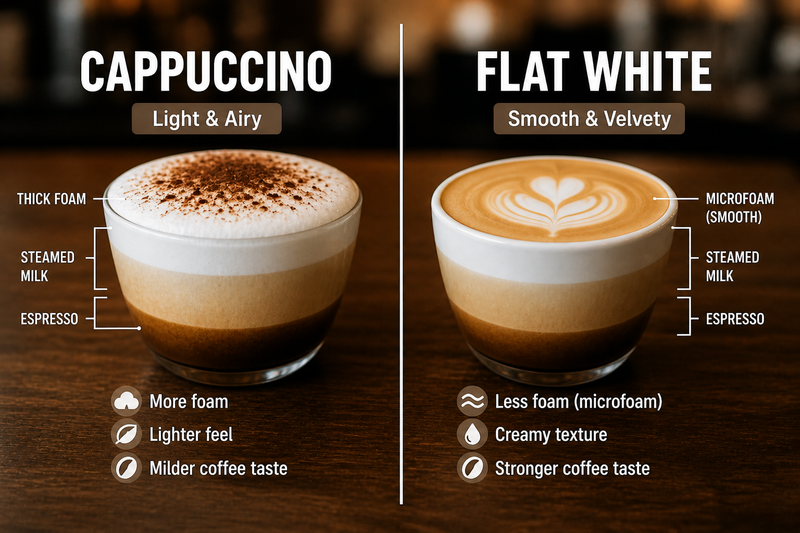

Challenge: How do we recommend a brand new movie that no one has rated yet?
Traditional CF methods fail: no interactions → no embeddings!
Example: New Movie Arrives
Show code
# Simulate a new movie with only metadatanew_movie = {"movie_id": 999999,"title": "Elemental (2023)","genres": ["Animation", "Comedy", "Fantasy"],"description": ("In a city where fire, water, land and air residents live together, ""a fiery young woman and a go-with-the-flow guy discover something ""elemental: how much they actually have in common." ),}display(Markdown("**New Movie:**"))for k, v in new_movie.items(): display(Markdown(f"- **{k}**: {v}"))
New Movie:
movie_id: 999999
title: Elemental (2023)
genres: [‘Animation’, ‘Comedy’, ‘Fantasy’]
description: In a city where fire, water, land and air residents live together, a fiery young woman and a go-with-the-flow guy discover something elemental: how much they actually have in common.
Question: Who should we recommend this to?
Traditional answer: Wait for users to rate it → cold start lag!
LLM answer: Use semantic understanding of genres and description!
Zero-Shot Recommendation with LLMs
Approach 1: Prompt-Based Ranking
We can ask an LLM to rank items based on user preferences!
Show code
# Create the ranking promptranking_prompt ="""You are a movie recommendation expert.User Profile:- Loved: Toy Story, Finding Nemo, Up, Inside Out- Preferred genres: Animation, Family, ComedyNew Movies to Consider:- The Drama (2026) - Romance- War Machine (2026) - Action, Sci-fi- Ice Age: Boiling Point (2026) - Animation, Adventure, ComedyTask: Rank these movies for this user (1 = best match).Output format:1. [Movie Title] - [Reason]2. [Movie Title] - [Reason]3. [Movie Title] - [Reason]"""display(show_prompt(ranking_prompt))# Call the LLMllm_ranking_response = ollama_generate( ranking_prompt, model=LLM_MODEL,)display(Markdown("**LLM Ranking Response:**"))show_response(llm_ranking_response)
Prompt:
You are a movie recommendation expert.
User Profile:
- Loved: Toy Story, Finding Nemo, Up, Inside Out
- Preferred genres: Animation, Family, Comedy
New Movies to Consider:
- The Drama (2026) - Romance
- War Machine (2026) - Action, Sci-fi
- Ice Age: Boiling Point (2026) - Animation, Adventure, Comedy
Task: Rank these movies for this user (1 = best match).
Output format:
1. [Movie Title] - [Reason]
2. [Movie Title] - [Reason]
3. [Movie Title] - [Reason]
LLM Ranking Response:
LLM Response:
1. **Ice Age: Boiling Point (2026)** - **Animation, Adventure, Comedy**
- *Reason*: This is the **best match** for your profile! Given your love for *Toy Story*, *Up*, and *Inside Out*—all beloved animated films with heart, humor, and adventure—this sequel fits perfectly. The *Ice Age* series has always balanced comedy, family-friendly storytelling, and dynamic animation, making it a strong contender.
2. **The Drama (2026)** - **Romance**
- *Reason*: While this isn’t a clear fit for your preferred genres (animation, family, comedy), it could still appeal to you if you enjoy emotionally engaging stories with lighthearted or whimsical elements. Romance films like *Beauty and the Beast* (animated) or *The Princess Bride* (family-friendly adventure) might share some thematic overlap. However, since it lacks animation or comedy, it ranks lower.
3. **War Machine (2026)** - **Action, Sci-fi**
- *Reason*: This is the **least aligned** with your profile. While it might have comedic elements or action-adventure appeal, it’s not animated or family-oriented, and its genre leans heavily toward mature themes. Unless you’re open to trying something outside your usual preferences, this wouldn’t be a top recommendation.
Show code
# Create the ranking promptranking_prompt ="""You are a movie recommendation expert.User Profile:- Loved: Toy Story, Finding Nemo, Up, Inside Out- Preferred genres: Animation, Family, ComedyNew Movies to Consider:- The Drama (2026) - Romance- War Machine (2026) - Action, Sci-fi- Ice Age: Boiling Point (2026) - Animation, Adventure, ComedyTask: Rank these movies for this user (1 = best match).Output format:[ {"rank": 1, "title": "[Movie Title]", "reason": "[Reason]"}, {"rank": 2, "title": "[Movie Title]", "reason": "[Reason]"}, {"rank": 3, "title": "[Movie Title]", "reason": "[Reason]"}]"""display(show_prompt(ranking_prompt))# Call the LLMllm_ranking_response = ollama_generate_json( ranking_prompt, model=LLM_MODEL,)show_response(llm_ranking_response)
Prompt:
You are a movie recommendation expert.
User Profile:
- Loved: Toy Story, Finding Nemo, Up, Inside Out
- Preferred genres: Animation, Family, Comedy
New Movies to Consider:
- The Drama (2026) - Romance
- War Machine (2026) - Action, Sci-fi
- Ice Age: Boiling Point (2026) - Animation, Adventure, Comedy
Task: Rank these movies for this user (1 = best match).
Output format:
[
{"rank": 1, "title": "[Movie Title]", "reason": "[Reason]"},
{"rank": 2, "title": "[Movie Title]", "reason": "[Reason]"},
{"rank": 3, "title": "[Movie Title]", "reason": "[Reason]"}
]
LLM Response:
[
{
"rank": 1,
"title": "Ice Age: Boiling Point (2026)",
"reason": "Perfect match for the user's profile! It's an **animation** film with **adventure** and **comedy** elements\u2014aligning closely with their love for *Toy Story*, *Finding Nemo*, and *Up*. The franchise\u2019s humor and heartwarming family dynamics are likely to resonate strongly."
},
{
"rank": 2,
"title": "The Drama (2026)",
"reason": "While not a direct match for their preferred genres, the user\u2019s profile suggests they enjoy **emotional, character-driven stories** (e.g., *Up*, *Inside Out*). If *The Drama* leans into **lighthearted romance** with comedic or family-friendly undertones, it could be a fun departure. However, without confirmation of its tone, it\u2019s riskier than *Ice Age*."
},
{
"rank": 3,
"title": "War Machine (2026)",
"reason": "Doesn\u2019t align with the user\u2019s preferences at all. **Action/Sci-fi** lacks the **animation**, **family-friendly**, or **comedy** focus they enjoy. Even if it has humor, it\u2019s unlikely to appeal given their profile."
}
]
Key Insight: LLM leverages semantic understanding of genres, themes, and patterns!
Approach 2: Embedding-Based Similarity
Modern LLMs can embed text into dense vectors. We can:
"Lord of the Rings: The Return of the King, The (20…
["Action", "Adventure", … "Fantasy"]
52458
"Disturbia (2007)"
["Drama", "Thriller"]
Show code
# Load postersposters = pl.read_parquet("../data/shared/posters.parquet")# Get poster paths for Alice's favorites (join via links to get tmdb_id)alice_with_posters = alice_favorites.join( links.select(["movie_id", "tmdb_id"]), on="movie_id").join(posters, on="tmdb_id", how="inner")poster_paths = alice_with_posters["poster_path"].to_list()display(Markdown(f"**Alice's Favorite Movies**:"))tmdb_images(poster_paths)
Alice’s Favorite Movies:
Show code
# Build text representationsmovie_texts = movies.with_columns( text=pl.format("{}: {}", "title", pl.col("genres").list.join(", ")))# User profile: concatenate favorite movie textsalice_fav_ids = ratings.filter((pl.col("user_id") == alice_id) & (pl.col("rating") >=4.5))["movie_id"].to_list()alice_profile_texts = movie_texts.join(alice_favorites, on="movie_id", how="semi")["text"].to_list()alice_profile ="\n".join(alice_profile_texts) # Use first 5 to keep it concisedisplay(Markdown(f"**Alice's Profile:**\n\n{alice_profile}"))
Alice’s Profile:
Forrest Gump (1994): Comedy, Drama, Romance, War Die Hard (1988): Action, Crime, Thriller Indiana Jones and the Last Crusade (1989): Action, Adventure Saving Private Ryan (1998): Action, Drama, War Sixth Sense, The (1999): Drama, Horror, Mystery Gladiator (2000): Action, Adventure, Drama Monsters, Inc. (2001): Adventure, Animation, Children, Comedy, Fantasy Beautiful Mind, A (2001): Drama, Romance Lord of the Rings: The Return of the King, The (2003): Action, Adventure, Drama, Fantasy Disturbia (2007): Drama, Thriller
Show code
# Get list of most rated movies# This ensures that the demo has familiar moviesmost_rated_movies = ratings.group_by("movie_id").len("num_ratings").top_k(500, by="num_ratings")
Show code
# Exclude movies Alice has already ratedcandidate_sample = movie_texts.join(most_rated_movies, on="movie_id", how="semi").join( alice_favorites, on="movie_id", how="anti")candidate_texts = candidate_sample["text"].to_list()candidate_ids = candidate_sample["movie_id"].to_list()# Embed user profileuser_embedding = ollama_embed(alice_profile, model=EMBED_MODEL)# Embed movies in batches for efficiencybatch_size =50movie_embeddings = []for batch in itertools.batched(candidate_texts, batch_size): batch_embeddings = ollama_embed(batch, model=EMBED_MODEL) movie_embeddings.extend(batch_embeddings)
Show code
# Convert to numpy arraysuser_vec = np.array(user_embedding).reshape(1, -1)item_vecs = np.array(movie_embeddings)# Compute similaritiessimilarities = cosine_similarity(user_vec, item_vecs)[0]# TODO(augment): display shapes as human readable (use markdown)user_vec.shape, item_vecs.shape, similarities.shape
# Display posters for recommendations (join via links to get tmdb_id)rec_with_posters = top_movies_llm.join(links.select(["movie_id", "tmdb_id"]), on="movie_id").join( posters, on="tmdb_id", how="inner")rec_poster_paths = rec_with_posters["poster_path"].to_list()display(Markdown(f"**Recommended for Alice**"))tmdb_images(rec_poster_paths)
Recommended for Alice
Note: LLM embeddings capture semantic relationships between movies and user preferences!
Metadata Generation
LLMs can enrich sparse movie catalogs by generating:
example_movie = movies.filter(pl.col("title").str.contains("Gump")).to_dicts()[0]metadata_prompt =f"""\You are a film analyst. Generate metadata for this movie:Title: {example_movie["title"]}Genres: {", ".join(example_movie["genres"])}Generate:1. Three thematic tags (e.g., friendship, adventure)2. Mood label (one word)3. Target audience (one phrase)4. Similar movie archetypesOutput ONLY valid JSON in this format:{{ "thematic_tags": ["tag1", "tag2", "tag3"], "mood": "word", "target_audience": "phrase", "similar_archetypes": ["archetype1", "archetype2"]}}"""display(show_prompt(metadata_prompt))# Generate metadata using LLMgenerated_metadata = ollama_generate_json( metadata_prompt, model=LLM_MODEL, temperature=0.3, # Lower temperature for more structured output)display(show_response(generated_metadata))
Prompt:
You are a film analyst. Generate metadata for this movie:
Title: Forrest Gump (1994)
Genres: Comedy, Drama, Romance, War
Generate:
1. Three thematic tags (e.g., friendship, adventure)
2. Mood label (one word)
3. Target audience (one phrase)
4. Similar movie archetypes
Output ONLY valid JSON in this format:
{
"thematic_tags": ["tag1", "tag2", "tag3"],
"mood": "word",
"target_audience": "phrase",
"similar_archetypes": ["archetype1", "archetype2"]
}
Enhanced Search: Users can query “heartwarming family movies”
Mood-Based Recommendation: Filter by emotional tone
Richer Embeddings: Incorporate generated tags into item representations
Batch Metadata Generation
In production, you’d generate metadata for entire catalog. Let’s use multiple descriptive dimensions to create rich movie profiles.
Define Descriptive Dimensions
We’ll generate three types of descriptions for each movie:
Mood and Atmosphere: Emotional tone and viewing experience (e.g., “uplifting”, “tense”, “melancholic”)
Target Audience: Who would enjoy this movie and why (e.g., “families with young children”, “thriller enthusiasts”)
Plot Essence: Core narrative elements in 1-2 sentences (e.g., “A toy’s journey to find its owner”)
Show code
# Sample from most-rated moviessample_movies = movies.join(most_rated_movies, on="movie_id", how="semi").sample(n=30, seed=42)display( Markdown(f"**Sampled {len(sample_movies)} movies** from most-rated for metadata generation"))display(Markdown("**Sample titles:**"))sample_movies.select("title")
Sampled 30 movies from most-rated for metadata generation
Sample titles:
shape: (30, 1)
title
str
"Wedding Crashers (2005)"
"Army of Darkness (1993)"
"Mad Max: Fury Road (2015)"
"Royal Tenenbaums, The (2001)"
"Shaun of the Dead (2004)"
"RoboCop (1987)"
"Speed (1994)"
"Magnolia (1999)"
"Dr. Strangelove or: How I Learned to Stop Worrying…
"Limitless (2011)"
…
"Dances with Wolves (1990)"
"There Will Be Blood (2007)"
"O Brother, Where Art Thou? (2000)"
"Star Wars: Episode I - The Phantom Menace (1999)"
"V for Vendetta (2006)"
"True Romance (1993)"
"As Good as It Gets (1997)"
"Looper (2012)"
"Rocky Horror Picture Show, The (1975)"
"Kung Fu Panda (2008)"
Show code
# Retrying multiple times in case of invalid response# Small LLMs sometimes fail to follow instruction about structure@retry(3, exceptions=(ValueError, json.JSONDecodeError))def generate_movie_metadata(title, genres):"""Generate multi-dimensional metadata using LLM. Returns: dict with keys: mood, target_audience, plot_essence """ prompt =f"""You are a film critic. Describe this movie along three dimensions:Title: {title}Genres: {", ".join(genres) if genres else"Unknown"}Generate brief descriptions (up to 2 sentences each):1. Mood and Atmosphere: What's the emotional tone? How does it feel to watch?2. Target Audience: Who would enjoy this and why?3. Plot Essence: Core story in 1-2 sentences.Output ONLY valid JSON:{{ "mood": "brief description", "target_audience": "brief description", "plot_essence": "brief description"}}""" metadata = ollama_generate_json(prompt, model=LLM_MODEL, temperature=0.3) required_keys = {"mood", "target_audience", "plot_essence"}ifnot required_keys.issubset(metadata):raiseValueError(f"One or more keys are missing: {required_keys -set(metadata)}")return metadata
Show code
# Generate metadata for all sampled moviesllm_metadata = []print("Generating multi-dimensional metadata...")for i, movie inenumerate(sample_movies.to_dicts()):print(f" [{i +1}/{len(sample_movies)}] {movie['title']}") metadata = generate_movie_metadata(movie["title"], movie["genres"]) llm_metadata.append(metadata)llm_metadata_df = pl.DataFrame(llm_metadata)print("\n✅ Metadata generation complete!")
Generating multi-dimensional metadata...
[1/30] Wedding Crashers (2005)
[2/30] Army of Darkness (1993)
[3/30] Mad Max: Fury Road (2015)
[4/30] Royal Tenenbaums, The (2001)
[5/30] Shaun of the Dead (2004)
[6/30] RoboCop (1987)
[7/30] Speed (1994)
[8/30] Magnolia (1999)
[9/30] Dr. Strangelove or: How I Learned to Stop Worrying and Love the Bomb (1964)
[10/30] Limitless (2011)
[11/30] Ghostbusters (a.k.a. Ghost Busters) (1984)
[12/30] Pirates of the Caribbean: At World's End (2007)
[13/30] Training Day (2001)
[14/30] Natural Born Killers (1994)
[15/30] Air Force One (1997)
[16/30] Arachnophobia (1990)
[17/30] Vertigo (1958)
[18/30] Dumb & Dumber (Dumb and Dumber) (1994)
[19/30] Fight Club (1999)
[20/30] Back to the Future Part III (1990)
[21/30] Dances with Wolves (1990)
[22/30] There Will Be Blood (2007)
[23/30] O Brother, Where Art Thou? (2000)
[24/30] Star Wars: Episode I - The Phantom Menace (1999)
[25/30] V for Vendetta (2006)
[26/30] True Romance (1993)
[27/30] As Good as It Gets (1997)
[28/30] Looper (2012)
[29/30] Rocky Horror Picture Show, The (1975)
[30/30] Kung Fu Panda (2008)
✅ Metadata generation complete!
Show code
show_response(llm_metadata[:3])
LLM Response:
[
{
"mood": "Lighthearted and witty, with a playful, fast-paced energy that balances charm and cheekiness\u2014leaving viewers grinning despite its morally dubious antics. The tone is warmly irreverent, blending romantic whimsy with comedic mischief, making it feel like a clever, carefree escape rather than a heavy-handed satire.",
"target_audience": "Ideal for fans of sharp, dialogue-driven comedies who enjoy rom-com tropes subverted with humor (think *The Hangover* meets *How to Lose a Guy in 10 Days*), as well as viewers who appreciate raunchy but heartfelt stories with charismatic, flawed protagonists. Perfect for groups or solo watchers craving a breezy, laugh-out-loud experience.",
"plot_essence": "Two con artists, John and Sage, exploit their charm to crash high-society weddings for free perks, but their latest scheme spirals into unexpected romantic entanglements when they befriend the groom\u2019s sister and her free-spirited friend\u2014blurring the line between scam and genuine connection."
},
{
"mood": "A wild, chaotic blend of dark humor, adrenaline-fueled action, and gothic horror\u2014equal parts hilarious and unsettling, with a frenetic energy that keeps viewers laughing even as the stakes feel absurdly high. The atmosphere oscillates between campy fun and genuine scares, wrapped in a retro-futuristic, medieval-meets-modern aesthetic that feels both timeless and deliciously over-the-top.",
"target_audience": "Fans of horror-comedy, action-packed satire, and cult classics will devour this; ideal for those who love Bruce Campbell\u2019s iconic one-liners, gory yet goofy violence, and a story that subverts expectations with sheer audacity. Also perfect for viewers who enjoy reboots-with-a-twist, as the film plays with time travel and undead legions in a way that\u2019s both clever and ridiculous.",
"plot_essence": "A bumbling hero, Ash Williams, accidentally time-travels to a medieval world overrun by an undead army he himself unleashed centuries later, and must outwit both the dead and his past self to survive\u2014while delivering some of the most quotable lines in horror history."
},
{
"mood": "A relentless, visceral frenzy of adrenaline and chaos\u2014equal parts exhilarating and oppressive, with a raw, post-apocalyptic grit that immerses viewers in a world of survival, brutality, and fleeting humanity, punctuated by breathtaking visuals and a pounding, immersive soundtrack.",
"target_audience": "Fans of high-octane action, sci-fi spectacle, and visually stunning cinema will devour this; it also appeals to those who crave deep character arcs beneath the carnage, as well as audiences who appreciate genre-defying storytelling with emotional weight.",
"plot_essence": "In a barren wasteland, Immortan Joe\u2019s tyrannical rule is challenged by his wife, Furiosa, who escapes with his five wives and a young warrior, Max, sparking a high-speed, blood-soaked chase across the desert as warlords, mutants, and Joe\u2019s relentless army hunt them down."
}
]
# Display first movie with full metadatafirst_movie = enriched_df.to_dicts()[0]display( Markdown(f"""**Example: {first_movie["title"]}****Genres:** {", ".join(first_movie["genres"])}**Mood:** {first_movie["mood"]}**Target Audience:** {first_movie["target_audience"]}**Plot Essence:** {first_movie["plot_essence"]}"""))
Example: Wedding Crashers (2005)
Genres: Comedy, Romance
Mood: Lighthearted and witty, with a playful, fast-paced energy that balances charm and cheekiness—leaving viewers grinning despite its morally dubious antics. The tone is warmly irreverent, blending romantic whimsy with comedic mischief, making it feel like a clever, carefree escape rather than a heavy-handed satire.
Target Audience: Ideal for fans of sharp, dialogue-driven comedies who enjoy rom-com tropes subverted with humor (think The Hangover meets How to Lose a Guy in 10 Days), as well as viewers who appreciate raunchy but heartfelt stories with charismatic, flawed protagonists. Perfect for groups or solo watchers craving a breezy, laugh-out-loud experience.
Plot Essence: Two con artists, John and Sage, exploit their charm to crash high-society weddings for free perks, but their latest scheme spirals into unexpected romantic entanglements when they befriend the groom’s sister and her free-spirited friend—blurring the line between scam and genuine connection.
Embed Each Dimension
Now let’s embed each metadata dimension separately. This allows us to find similar movies along each axis:
Show code
# Extract text for each dimensionmood_texts = enriched_df["mood"].to_list()audience_texts = enriched_df["target_audience"].to_list()plot_texts = enriched_df["plot_essence"].to_list()print("Generating embeddings for each dimension...")print(f" - Mood: {len(mood_texts)} descriptions")print(f" - Target Audience: {len(audience_texts)} descriptions")print(f" - Plot Essence: {len(plot_texts)} descriptions")
Generating embeddings for each dimension...
- Mood: 30 descriptions
- Target Audience: 30 descriptions
- Plot Essence: 30 descriptions
Show code
# Generate embeddings for each dimension (in batches)print("\nEmbedding mood descriptions...")mood_embeddings = []for batch in itertools.batched(mood_texts, 10): batch_emb = ollama_embed(list(batch), model=EMBED_MODEL) mood_embeddings.extend(batch_emb)print("Embedding target audience descriptions...")audience_embeddings = []for batch in itertools.batched(audience_texts, 10): batch_emb = ollama_embed(list(batch), model=EMBED_MODEL) audience_embeddings.extend(batch_emb)print("Embedding plot essence descriptions...")plot_embeddings = []for batch in itertools.batched(plot_texts, 10): batch_emb = ollama_embed(list(batch), model=EMBED_MODEL) plot_embeddings.extend(batch_emb)# Convert to numpy arrays (one row per movie)mood_matrix = np.array(mood_embeddings)audience_matrix = np.array(audience_embeddings)plot_matrix = np.array(plot_embeddings)print(f"\n✅ Embedding complete!")print(f" - Mood matrix shape: {mood_matrix.shape}")print(f" - Audience matrix shape: {audience_matrix.shape}")print(f" - Plot matrix shape: {plot_matrix.shape}")
display(Markdown("### Most Similar by Mood\n"))sorted_by_mood = other_movies_df.sort("mood_similarity", descending=True)for movie in sorted_by_mood.select(["title", "mood", "mood_similarity"]).head(5).to_dicts(): display( Markdown(f"**• {movie['title']}** (similarity: {movie['mood_similarity']:.3f}) \n *Mood: {movie['mood']}*\n" ) )
Most Similar by Mood
• Dumb & Dumber (Dumb and Dumber) (1994) (similarity: 0.780) Mood: A lighthearted, fast-paced comedy with a warm, absurdly silly tone—equal parts slapstick and heartfelt, leaving viewers grinning through its relentless physical humor and lovably clueless protagonists. The atmosphere is infectious, blending goofy escapades with a surprisingly cozy, buddy-movie charm.
• As Good as It Gets (1997) (similarity: 0.748) Mood: A warm yet melancholic blend of sharp wit and poignant vulnerability, balancing humor with heartfelt moments—often leaving audiences both laughing and emotionally moved by its raw, humanistic charm.
• Ghostbusters (a.k.a. Ghost Busters) (1984) (similarity: 0.671) Mood: A high-energy blend of witty humor, playful sci-fi spectacle, and lighthearted thrills—balancing absurdity with heartfelt camaraderie, making it feel like a fun, chaotic adventure that leaves you grinning from start to finish.
• Natural Born Killers (1994) (similarity: 0.667) Mood: A hyper-stylized, chaotic blend of dark satire and visceral intensity—equal parts adrenaline-fueled and nihilistically campy, with a feverish, hallucinatory energy that oscillates between grotesque humor and brutal violence. The tone is unrelenting, self-aware, and deliberately over-the-top, leaving viewers emotionally whiplashed yet oddly mesmerized.
• Kung Fu Panda (2008) (similarity: 0.665) Mood: Warm, uplifting, and hilariously energetic with a perfect blend of heartfelt moments and slapstick comedy—like a cozy noodle shop filled with laughter and unexpected wisdom, leaving you grinning from ear to ear.
Show code
display(Markdown("### Most Similar by Target Audience\n"))sorted_by_audience = other_movies_df.sort("audience_similarity", descending=True)for movie in ( sorted_by_audience.select(["title", "target_audience", "audience_similarity"]) .head(5) .to_dicts()): display( Markdown(f"**• {movie['title']}** (similarity: {movie['audience_similarity']:.3f}) \n *Audience: {movie['target_audience']}*\n" ) )
Most Similar by Target Audience
• As Good as It Gets (1997) (similarity: 0.702) Audience: Fans of character-driven comedies with depth, particularly those who appreciate dry humor, underdog narratives, and stories about redemption and connection; ideal for viewers who enjoy films like The Royal Tenenbaums* or Eternal Sunshine of the Spotless Mind in tone.*
• Dumb & Dumber (Dumb and Dumber) (1994) (similarity: 0.665) Audience: Fans of raunchy, dumb-but-loveable humor will adore this, especially those who enjoy Jim Carrey’s early manic energy and farcical antics; ideal for viewers who crave laugh-out-loud, low-stakes comedy with a side of quirky friendship dynamics.
• Shaun of the Dead (2004) (similarity: 0.652) Audience: Fans of clever, meta-comedy (especially Monty Python* and Zombieland enthusiasts) and horror-lovers who appreciate self-aware, satirical takes on classic tropes—ideal for those who enjoy witty banter, undead antics, and a protagonist as lovable as he is clueless.*
• Royal Tenenbaums, The (2001) (similarity: 0.627) Audience: Fans of Wes Anderson’s signature style (quirky, visually precise, and dialogue-driven) and those who appreciate offbeat dramas with heart, as well as viewers who enjoy layered narratives that balance humor with poignant family dynamics.
• Looper (2012) (similarity: 0.615) Audience: Fans of thought-provoking sci-fi with visceral action (e.g., Inception, The Matrix) and viewers who appreciate morally complex protagonists; also ideal for those who enjoy dark, twisty narratives with a mix of humor and existential themes. Genre enthusiasts seeking more than just explosions—substance over spectacle.
Show code
display(Markdown("### Most Similar by Plot Essence\n"))sorted_by_plot = other_movies_df.sort("plot_similarity", descending=True)for movie in sorted_by_plot.select(["title", "plot_essence", "plot_similarity"]).head(5).to_dicts(): display( Markdown(f"**• {movie['title']}** (similarity: {movie['plot_similarity']:.3f}) \n *Plot: {movie['plot_essence']}*\n" ) )
Most Similar by Plot Essence
• True Romance (1993) (similarity: 0.519) Plot: Clare (Patricia Arquette), a naive runaway, falls for Christian (Christian Slater), a small-time criminal with a penchant for violence, as their chaotic, drug-fueled romance spirals into a deadly game of cat-and-mouse with a ruthless crime lord (Christopher Walken). Their love story becomes a blood-soaked odyssey through the underbelly of Los Angeles, where survival is the only true romance.
• Vertigo (1958) (similarity: 0.518) Plot: A detective with acrophobia becomes obsessed with a woman who resembles his late wife, only to uncover a web of deception, identity theft, and fatal obsession in this twisted tale of love and paranoia.
• Natural Born Killers (1994) (similarity: 0.515) Plot: A deranged couple, Mickey and Mallory, embark on a murderous crime spree across America, while their exploits are sensationalized by a tabloid journalist and a TV producer, blurring the line between reality and media exploitation in a surreal, violent critique of celebrity culture and desensitization.
• O Brother, Where Art Thou? (2000) (similarity: 0.515) Plot: After escaping a chain-gang prison, a lovable but clueless drifter and his two eccentric companions embark on a quixotic quest to find buried treasure, tangling with corrupt politicians, a siren-like seductress, and a series of bizarre misadventures in the Great Depression-era American South.
• Fight Club (1999) (similarity: 0.509) Plot: An insomniac office worker forms an underground fight club with a charismatic soap salesman, spiraling into a violent crusade against societal conformity—only to uncover a shadowy conspiracy that blurs the line between his alter ego and a terrorist cult.
Key Insights:
Multi-dimensional similarity: Same movie can be similar to different movies along different axes
Semantic understanding: LLM embeddings capture meaning, not just keyword matching
Flexible discovery: Users can find movies by mood, audience fit, or plot similarity
This enables: - Mood-based browsing: “Show me movies with a similar atmosphere” - Audience-targeted recommendations: “Find movies for the same demographic” - Plot-based discovery: “Movies with similar narrative structures”
Visual Comparison: Three Dimensions of Similarity
Show code
# Get top 5 movies for each dimensionmood_top5 = sorted_by_mood.head(5)audience_top5 = sorted_by_audience.head(5)plot_top5 = sorted_by_plot.head(5)# Join with posters (via links to get tmdb_id)links_tmdb = links.select(["movie_id", "tmdb_id"])mood_posters = mood_top5.join(links_tmdb, on="movie_id").join( posters, on="tmdb_id", how="inner", maintain_order="left")audience_posters = audience_top5.join(links_tmdb, on="movie_id").join( posters, on="tmdb_id", how="inner", maintain_order="left")plot_posters = plot_top5.join(links_tmdb, on="movie_id").join( posters, on="tmdb_id", how="inner", maintain_order="left")# Display each dimensiondisplay(Markdown(f"**Reference:** {reference_movie['title']}\n"))display(Markdown("**Most Similar by MOOD:**"))display(tmdb_images(mood_posters["poster_path"].to_list()))display(Markdown("***\n**Most Similar by TARGET AUDIENCE:**"))display(tmdb_images(audience_posters["poster_path"].to_list()))display(Markdown("***\n**Most Similar by PLOT ESSENCE:**"))display(tmdb_images(plot_posters["poster_path"].to_list()))
Reference: Wedding Crashers (2005)
Most Similar by MOOD:
Most Similar by TARGET AUDIENCE:
Most Similar by PLOT ESSENCE:
Notice how the same reference movie yields different recommendations depending on which dimension we prioritize!
True Cold Start: Unknown Content
The Cold Start Spectrum
So far, we’ve been handling “cold for our system” items:
Movies like “Toy Story”, “The Matrix” are well-known to LLMs
LLMs have extensive training data about these items
We can leverage their world knowledge
True cold start = Content completely unknown to the LLM:
Brand new videos, podcasts, articles
User-generated content (social media)
Internal company content
Truly novel items
Example: Short-Form Video
Let’s demonstrate with a short video that didn’t exist during LLM training. We have:
Transcript: What’s said in the video
Screenshots: Visual frames from the video
Show code
# Load transcriptwithopen("../data/shared/short_form/transcript.txt", "r") as f: video_transcript = f.read()display(Markdown(f"**Video Transcript:**\n\n```\n{video_transcript}\n```"))
Video Transcript:
🎬 Transcript: “Cappuccino vs Flat White — What Do People Actually Prefer?”
[0:00–0:04 | Hook — holding two cups]
“Most people think these two coffees are the same… but they’re really not.”
[0:04–0:08 | Quick cuts — foam + pour]
“Let me show you why.”
[0:08–0:18 | Making coffee — you at machine]
“Both start the same — espresso and milk.”
“But this one—” (steam milk longer, airy)
“—gets thick, fluffy foam.”
“And this one—” (smooth pour)
“—is all about silky, smooth milk.”
[0:18–0:22 | Hold both drinks up]
“Cappuccino… vs flat white.”
[0:22–0:40 | Café interviews — fast cuts]
You: “Quick question — what’s the difference?”
Person 1: “Uhh… size?”
Person 2: “Flat white is stronger?”
Person 3: “I have no idea.” (laughs)
Person 4 (confident): “Cappuccino has more foam.”
You (to camera):
“Okay… mixed results.”
[0:40–0:55 | Blind taste test]
“Let’s test it.”
You: “Which one is stronger?”
Person: “This one.” (points)
Another: “This one’s smoother.”
You (reveal):
“This is the flat white.”
[0:55–1:05 | Simple explanation — direct to camera]
“Here’s the trick:”
“Cappuccino has more foam — so it feels lighter.”
“Flat white has less foam — so the coffee tastes stronger.”
[1:05–1:15 | Visual demo — spoon in foam]
“Look at this.” (spoon sits on cappuccino foam)
“And this…” (spoon sinks in flat white)
“Totally different texture.”
[1:15–1:22 | Optional twist — barista or comment]
Barista (or you):
“Honestly, it also depends on who makes it.”
[1:22–1:30 | Ending — you sipping both]
“So… which one are you choosing?”
Text on screen:
“Team Cappuccino 🫧 or Team Flat White 🥛?”

Generate Video Description
First, ask the LLM to create a coherent description from the raw transcript:
Show code
description_prompt =f"""You are a content analyst. Below is a transcript from a short-form video.Create a concise, engaging description of this video (2-3 sentences) that captures:- The main topic/theme- The format/style- The key takeawayTranscript:{video_transcript}Output ONLY the description text (no extra formatting):"""video_description = ollama_generate(description_prompt, model=LLM_MODEL, temperature=0.3)display(Markdown(f"**Generated Video Description:**\n\n{video_description}"))
Generated Video Description:
“Cappuccino vs Flat White: The Coffee Showdown You Didn’t Know You Needed!”
This fast-paced, visually driven video breaks down the key differences between cappuccinos and flat whites—from foam texture to coffee strength—with a fun blind taste test and real café interviews. The takeaway? Cappuccinos are lighter and foamier, while flat whites pack a smoother, bolder punch. Which team are you on? ☕
Generate Metadata for Unknown Content
Now generate rich metadata from the description:
Show code
metadata_prompt =f"""You are a content analyst. Generate metadata for this video.Video Description:{video_description}Original Transcript (for context):{video_transcript[:500]}...Generate metadata along the same dimensions as before:Output ONLY valid JSON:{{ "mood": "brief description of emotional tone", "target_audience": "who would enjoy this and why", "plot_essence": "core narrative/content in 1-2 sentences", "tags": ["tag1", "tag2", "tag3", "tag4", "tag5"]}}"""video_metadata = ollama_generate_json(metadata_prompt, model=LLM_MODEL, temperature=0.3)display(Markdown("**Generated Metadata:**"))show_response(video_metadata)
Generated Metadata:
LLM Response:
{
"mood": "engaging, educational, and lighthearted with a competitive yet informative tone\u2014blends humor and visual contrast to make coffee culture accessible",
"target_audience": [
{
"group": "coffee enthusiasts and casual drinkers",
"reason": "seeks to clarify subtle differences between popular espresso-based drinks in an entertaining way"
},
{
"group": "baristas, caf\u00e9 workers, or aspiring coffee professionals",
"reason": "reinforces technical distinctions (foam texture, milk integration) and real-world preparation insights"
},
{
"group": "social media users (TikTok/Reels/Shorts audiences)",
"reason": "fast-paced, visually driven format with a 'showdown' hook ideal for shareable, bite-sized content"
},
{
"group": "travelers or tourists in coffee-centric cities",
"reason": "helps navigate caf\u00e9 menus by demystifying ordering choices"
}
],
"plot_essence": "A visually dynamic comparison of cappuccinos (airy foam, lighter ratio) and flat whites (smooth microfoam, bolder coffee flavor) through side-by-side preparation, blind taste tests, and caf\u00e9 interviews\u2014challenging misconceptions while celebrating the nuanced art of milk integration.",
"tags": [
"coffee culture",
"barista techniques",
"food vs food comparisons",
"blind taste test",
"caf\u00e9 education",
"espresso drinks",
"visual storytelling",
"quick tips",
"travel-friendly content",
"foam texture analysis",
"milk steaming demo",
"coffee showdown",
"accessible learning",
"social media viral potential",
"latte art adjacent",
"beverage science"
]
}
Find Similar Movies
Now we can find movies similar to this completely new content:
Show code
# Embed the video descriptionvideo_embedding = ollama_embed(video_description, model=EMBED_MODEL)video_vec = np.array(video_embedding).reshape(1, -1)# Compare to movie plot embeddings from earliervideo_plot_similarities = cosine_similarity(video_vec, plot_matrix)[0]# Create results dataframevideo_similarity_df = enriched_df.select(["title", "plot_essence"]).with_columns( [pl.Series("similarity", video_plot_similarities)])display( Markdown(f"Comparing video to **{len(video_similarity_df)} movies**...\n\n### Top 5 Most Similar Movies by Content\n" ))top_similar = video_similarity_df.sort("similarity", descending=True).head(5)for movie in top_similar.to_dicts(): display( Markdown(f"**• {movie['title']}** (similarity: {movie['similarity']:.3f}) \n *Plot: {movie['plot_essence']}*\n" ) )
Comparing video to 30 movies…
Top 5 Most Similar Movies by Content
• Rocky Horror Picture Show, The (1975) (similarity: 0.230) Plot: A young engaged couple stumbles upon the castle of the mad, androgynous scientist Dr. Frank-N-Furter, who transforms their mundane lives into a wild, gender-bending rock opera of murder, mayhem, and midnight snack rituals—culminating in a cult-favorite battle of the sexes and a transvestite showdown.
• Natural Born Killers (1994) (similarity: 0.214) Plot: A deranged couple, Mickey and Mallory, embark on a murderous crime spree across America, while their exploits are sensationalized by a tabloid journalist and a TV producer, blurring the line between reality and media exploitation in a surreal, violent critique of celebrity culture and desensitization.
• Wedding Crashers (2005) (similarity: 0.208) Plot: Two con artists, John and Sage, exploit their charm to crash high-society weddings for free perks, but their latest scheme spirals into unexpected romantic entanglements when they befriend the groom’s sister and her free-spirited friend—blurring the line between scam and genuine connection.
• Fight Club (1999) (similarity: 0.192) Plot: An insomniac office worker forms an underground fight club with a charismatic soap salesman, spiraling into a violent crusade against societal conformity—only to uncover a shadowy conspiracy that blurs the line between his alter ego and a terrorist cult.
• Vertigo (1958) (similarity: 0.171) Plot: A detective with acrophobia becomes obsessed with a woman who resembles his late wife, only to uncover a web of deception, identity theft, and fatal obsession in this twisted tale of love and paranoia.
Key Insight:
We started with completely unknown content (transcript + screenshots)
LLM generated description and metadata on-the-fly
We can now recommend this new content to users with similar preferences
This works for any new content type: videos, articles, podcasts, products
True cold start solved using LLM’s ability to understand and generate metadata from raw content!
Key Takeaways
Zero-Shot Recommendation: LLMs can recommend without training data by leveraging semantic understanding
Cold-Start Problem Solved: Generate metadata for completely unknown content (videos, podcasts, articles)
P5: Treats recommendation as sequence-to-sequence task (Geng et al., 2022)
LLMRec: Uses LLM as ranker for candidate items (Hou et al., 2023)
Next: Part IV.a - Conversational Recommendation with Keyphrases!
References
Geng, S., Liu, S., Fu, Z., Ge, Y., & Zhang, Y. (2022). Recommendation as language processing (P5): A unified pretrain, personalized prompt & predict paradigm. Proceedings of the 16th ACM Conference on Recommender Systems, 299–315. https://doi.org/10.1145/3523227.3546767
Hou, Y., Zhang, J., Lin, Z., Lu, H., Xie, R., McAuley, J., & Zhao, W. X. (2023). Large language models are zero-shot rankers for recommender systems. arXiv Preprint arXiv:2305.08845. https://arxiv.org/abs/2305.08845
Zhang, Y., Hou, Y., Zhao, W. X., et al. (2023). Collaborative large language model for recommender systems. arXiv Preprint arXiv:2311.01343. https://arxiv.org/abs/2311.01343